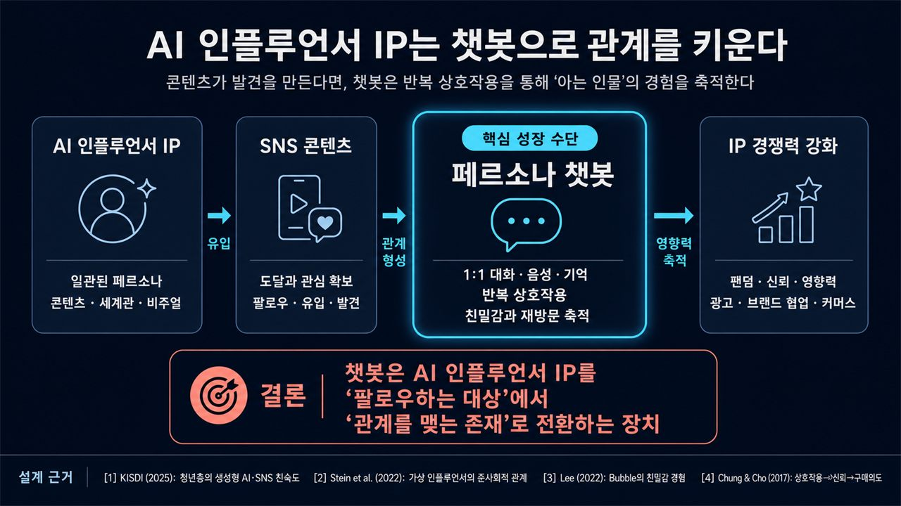

DearMateAI 컴패니언 앱 · 멀티서비스 모노레포 · 파이널 프로젝트
React Native(Expo) 앱, Python Agent Backend, 독립 배포되는 A2A(Google ADK) 에이전트, LiteLLM 게이트웨이가 각각의 경계를 갖는 모노레포입니다. 저는 에이전트가 실제로 돌아가는 층을 맡았습니다 — 런타임과 프로바이더, 그리고 그 품질을 재는 평가 파이프라인. 과정 수료증에 Project : 지훈으로 등재된 최종 프로젝트입니다.
담당: A2A 에이전트 · Agent Backend(런타임·계약·관측성) · LLM 게이트웨이 · 시스템 프롬프트 · 장기기억 평가
커밋 234개의 영역 분포
- AgentRunner 런타임 루프, LLM 요청·응답 계약 스키마, FastAPI 부트스트랩과 라우터·관측성 배선
- 페르소나 에이전트를 독립 실행 ADK 런타임으로 분리하고, 게이트웨이 페일오버와 Supabase 기반 페르소나 provider를 연결
- 구독 카탈로그 API와 정책·구독 관리 콘솔까지 운영 기능으로 확장
- 긴 시간축의 관계 서사를 담은 한국어 대화 데이터셋 생성 파이프라인 — 대화 5건 × 15만 토큰 규모, 목표 토큰을 20K 파일럿에서 400K 본 생성으로 확장
- 길이별 cutoff 생성과 사실 생존 판정, QA 문항 생성·응답, 검증 리포트 CLI로 "기억이 남았는지"를 수치로 판정
- 배경·제약·시드·시나리오를 고정하고 성격 유형 변수만 바꾼 통제 비교 설계. 경험 원장으로 반복 서술을 막고, 같은 날 상태 충돌은 생성 시점에 반려
- 완료 기준을 파일 크기가 아니라 JSONL·사실 원장·매니페스트 검증 통과로 정의하고, 팀원이 독립 실행하도록 portable 번들로 인계

PythonFastAPIGoogle ADK / A2ALiteLLMOpenRouterLogfireSupabaseSurrealDBTypeScriptReact NativeDocker
커밋 수치는 팀 작업 저장소를 전 브랜치 기준으로 집계한 값입니다. 공개 저장소에는 통합 시점까지의 스냅샷(421커밋)만 올라가 있어, 기능 브랜치에 남은 작업은 그곳에서 보이지 않습니다.